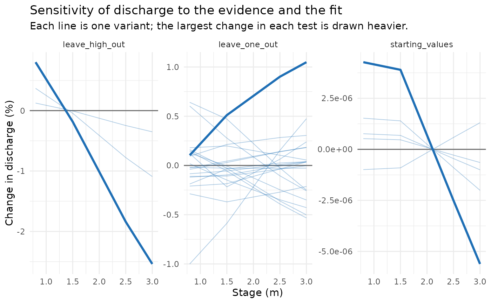

How sensitive a rating is to its evidence and its choices
Source:R/sensitivity.R
rating_sensitivity.RdRefits a rating with something changed and reports what that does to the discharge, at stages you can name. It answers the question a reviewer actually asks: if this gauging were wrong, or the breakpoint a little elsewhere, how much would the flows I report move? The consequence is reported in discharge, in m\(^3\)/s and as a percentage, not in coefficients, which can change a great deal while the curve barely moves.
Four tests, each of which can be switched off with tests:
leave_one_out: refit with each gauging left out in turn, linked to that gauging'sevidence_id. The summary also gives that gauging's leverage and Cook's distance, so you can see whether the influence diagnostic and the actual effect agree.leave_high_out: refit without the highest gaugings (the top 5%, 10% and 20% by default). The top of a rating is the part least often gauged, and this shows how far the flows above the remaining gaugings depend on the few that were taken there.starting_values: the discharge from every other valid starting point the optimiser tried, against the one it chose. No refit is needed; it uses the record the fit kept. Large differences mean two almost equally good fits predict different flows.boundary_shift: move each breakpoint up and down byshiftof the gauged stage range and refit. For a rating with a single limb there is nothing to shift.
Each refit uses the settings the rating recorded (objective, parameter bounds, breakpoints, recency weighting, multi-start) so the only thing that differs is the change being tested. A refit that cannot be made, for example because a limb is left with too few gaugings, is reported with its reason and is never dropped silently.
Only a rating as the optimiser produced it can be tested: one that has been amended since (aligned, extended, grafted) cannot be refitted faithfully.
Usage
rating_sensitivity(
x,
tests = .sensitivity_tests,
stages = NULL,
high_out = c(0.05, 0.1, 0.2),
shift = 0.05,
evidence_ids = NULL,
max_refits = 200L
)Arguments
- x
A FlodeRating or FlodeSegmentedRating fitted from gaugings. A FlodeRatingTable holds no gaugings and is refused. A segmented fit supports
leave_one_out,leave_high_outand, when its breakpoints were fixed,boundary_shift.- tests
Which tests to run: any of
"leave_one_out","leave_high_out","starting_values","boundary_shift".- stages
Numeric vector of stages (m) at which to compare discharge. Default: 25 stages across the fitted range. Name the stages you report flows at to see the effect there.
- high_out
Fractions of the gaugings, from the top, to leave out. Default
c(0.05, 0.10, 0.20); each leaves out at least one.- shift
Fraction of the gauged stage range to move each breakpoint by. Default 0.05.
- evidence_ids
Character vector of evidence ids to leave out one at a time, or
NULL(default) for every gauging.- max_refits
Integer. A guard:
leave_one_outrefuses to run more than this many refits unless you restrictevidence_ids. Default 200.
Value
A FlodeSensitivity. print() gives the worst case for each
test, plot() draws the change in discharge against stage, and
sensitivity_summary() and sensitivity_results() return the tables.
Examples
set.seed(1)
stage_m <- seq(0.4, 3, length.out = 20)
gaugings <- data.frame(stage_m = stage_m,
discharge_cms = 3.2 * stage_m^1.6 * exp(rnorm(20, sd = 0.04)))
fit <- fit_rating(gaugings, quiet = TRUE)
sens <- rating_sensitivity(fit, stages = c(0.8, 1.5, 2.5, 3))
sens
#> <FlodeSensitivity> 28 variant(s) over 4 stage(s), tests: leave_one_out, leave_high_out, starting_values, boundary_shift
#> leave_one_out: 20 variant(s); worst: without G014 changes discharge by 1.05% (0.196 m3/s) at 3 m
#> leave_high_out: 3 variant(s); worst: without the highest 4 (top 20.0%) changes discharge by 2.54% (0.476 m3/s) at 3 m
#> starting_values: 5 variant(s); worst: limb 1, start 2 changes discharge by 0.00% (3.76e-07 m3/s) at 3 m
#> boundary_shift: nothing to test
sensitivity_summary(sens)[test == "leave_one_out"][order(-max_abs_change_pct)][1:3]
#> test variant evidence_ids status max_abs_change_cms
#> <char> <char> <list> <char> <num>
#> 1: leave_one_out without G014 G014 ok 0.19646902
#> 2: leave_one_out without G004 G004 ok 0.08894166
#> 3: leave_one_out without G006 G006 ok 0.04674949
#> max_abs_change_pct stage_at_max_m leverage cooks_distance note
#> <num> <num> <num> <num> <char>
#> 1: 1.0487793 3.0 0.07343305 0.19745767 <NA>
#> 2: 1.0001033 0.8 0.14751300 0.15930263 <NA>
#> 3: 0.6414197 0.8 0.12995254 0.07175433 <NA>
plot(sens)
